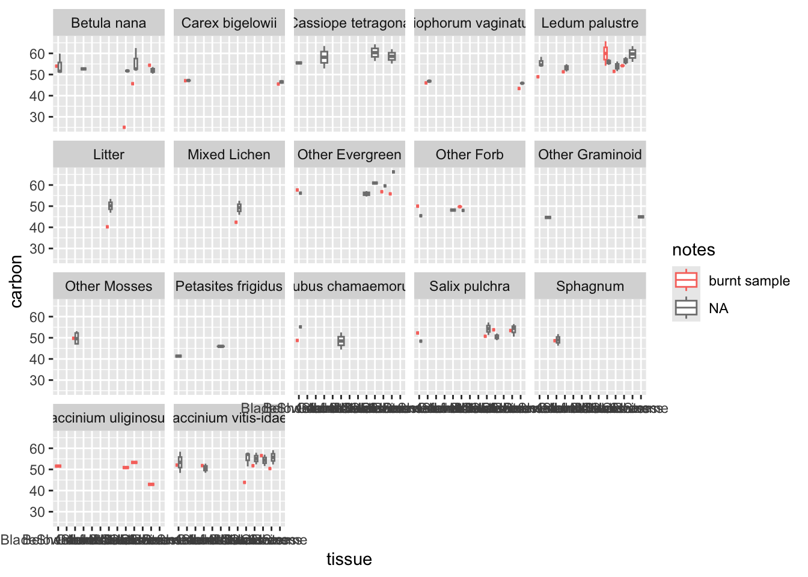
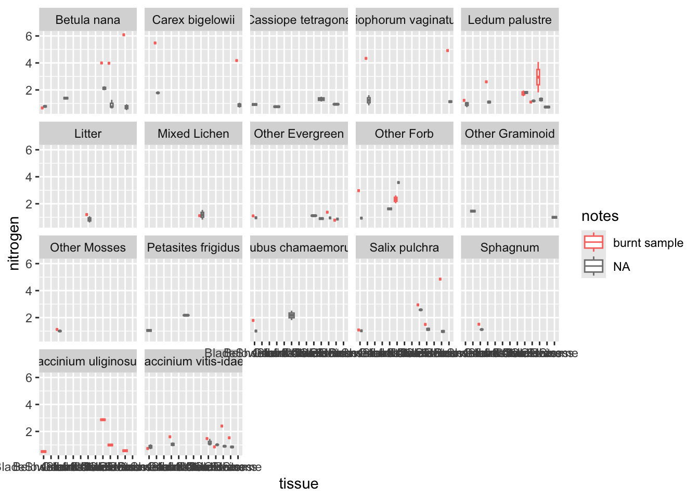

library(tidyverse)
library(readr)
library(readxl)
library(here)
library(janitor)EA_cleaning
Set up
load packages
Aboveground
read in data
cn <- read_excel("~/LTER-pluck/2024_pluck/raw_data/CN_results2.xlsx")
view(cn)
#1007 of 17 variables
id <- read_csv("~/LTER-pluck/2024_pluck/processed_data/ag_pluck_id.csv")
#1134 of 7tidy columns and rows
cn <- clean_names(cn)
colnames(cn) [1] "group" "sample_name" "filename" "date"
[5] "inj_date" "inj_time" "type" "weight_mg"
[9] "protein_factor" "humidity_percent" "as" "vial"
[13] "nitrogen" "carbon" "id" "sample_type"
[17] "notes" # removing unnecessary columns
cn1 <- select(cn, -c("group", "sample_name", "inj_date", "inj_time", "type", "weight_mg", "protein_factor", "humidity_percent", "as", "vial"))
#of 6
cn1$carbon <- as.numeric(cn1$carbon)Warning: NAs introduced by coercioncn1$nitrogen <- as.numeric(cn1$nitrogen)Warning: NAs introduced by coercioncn1$filename <- as.character(cn1$filename)
names(cn1)[names(cn1) == "id"] <- "plot_tissue_id"separate AG masses from others
cn_ag <- filter(cn1, sample_type == "AG")
view(cn_ag)
#760corrections
# two ids from AG mass data so one renamed to another quad id
cn_ag$plot_tissue_id[cn_ag$filename == "09042025013"] <- "1601"
# looking into ids that appeared in EA results that are not id names
# 602, 685, 1548, 1549, 1084, 1355
# 602 was mistyped, paper datasheet say 662
# 685 was mistyped, paper datasheet say 658
# 1548 was mistyped, paper datasheet say 1506
# 1549 was mistyped, paper datasheet say 1507
# 223 was mistyped, paper datasheet say 222
# 1084 unclear what sample it was
# 1355 is under the id 1164, which was missing so showed up as an id but not a sample
cn_ag$plot_tissue_id[cn_ag$filename == "04042025044"] <- "662"
cn_ag$plot_tissue_id[cn_ag$filename == "04042025042"] <- "658"
cn_ag$plot_tissue_id[cn_ag$filename == "09042025017"] <- "1506"
cn_ag$plot_tissue_id[cn_ag$filename == "09042025018"] <- "1507"
cn_ag$plot_tissue_id[cn_ag$filename == "03042025105"] <- "222"
cn_ag$plot_tissue_id[cn_ag$filename == "24032025073"] <- "NA"
cn_ag$plot_tissue_id[cn_ag$filename == "23012026046"] <- "1164"combine
head(cn_ag)# A tibble: 6 × 7
filename date nitrogen carbon plot_tissue_id sample_type notes
<chr> <chr> <dbl> <dbl> <chr> <chr> <chr>
1 20032025011 03/20/2025 4.34 46.0 1648 AG burnt sample
2 20032025012 03/20/2025 4.92 43.4 1649 AG burnt sample
3 20032025013 03/20/2025 5.48 47.1 1650 AG burnt sample
4 20032025014 03/20/2025 4.18 45.5 1669 AG burnt sample
5 20032025015 03/20/2025 4.00 25.0 1627 AG burnt sample
6 20032025016 03/20/2025 3.98 45.7 1628 AG burnt sample#760 obs of 7
head(id)# A tibble: 6 × 7
block treatment surface_area_cm2 site species tissue plot_tissue_id
<dbl> <chr> <dbl> <chr> <chr> <chr> <dbl>
1 1 CT 400 MAT06 Eriophorum vagin… Blade… 264
2 1 CT 400 MAT06 Eriophorum vagin… Rhizo… 268
3 1 CT 400 MAT06 Carex bigelowii Blade… 285
4 1 CT 400 MAT06 Carex bigelowii Rhizo… NA
5 1 CT 400 MAT06 Other Graminoid Blade… NA
6 1 CT 400 MAT06 Other Graminoid Rhizo… NA#1134 of 7
id$plot_tissue_id <- as.character(id$plot_tissue_id)
cn2 <- left_join(cn_ag, id)
# Joining with `by = join_by(plot_tissue_id)`
view(cn2)
#760 of 13error check
cn2.na <- subset(cn2, (is.na(cn2$block)))
#117 obs
# remove check results
cn3 <- cn2 %>%
filter(!grepl("Check", plot_tissue_id))
#697
# "NA" wasn't NA
cn3$plot_tissue_id[cn3$plot_tissue_id == "NA"] <- NA
cn3.na <- subset(cn3, (is.na(cn3$block)))
#54
# 1186, 538, 1617, 1488, 1476
# these aren't first quads, just quads that didn't originally get added to the rest
# how to combine with other samples? better just left out? I don't want to average with the other values bc then it'll be over-represented
# ask Duncan?
# leave all out for now
cn4 <- cn3 %>%
filter(!(block %in% c(NA)))
#643, good!!burnt samples
Looked at values of burnt against unburnt samples, not terribly different but I think it’s best to remove them entirely, rather than keep even potentially flawed samples. This removes all samples from B1 F0.5, and B1 CT Q3&4.
# checking burnt B1 against unburnt B2&3
test <- cn4 %>%
filter(treatment %in% c("F0.5"))
test %>%
ggplot() +
geom_boxplot(aes(x=tissue, y=carbon, col=notes)) +
facet_wrap(~species)
test %>%
ggplot() +
geom_boxplot(aes(x=tissue, y=nitrogen, col=notes)) +
facet_wrap(~species)
remove burnt samples
burnt <- cn4 %>%
filter(notes %in% c("burnt sample"))
#40
# all burnt, should be removed
cn5 <- cn4 %>%
filter(!(notes %in% c("burnt sample")))
view(cn5)
#603 obscreate growth form column
#create Growth_form column
cn6 <- cn5 %>%
mutate(growth_form = case_when(
startsWith(species, "Eriophorum vaginatum") ~ "Graminoid",
startsWith(species, "Other Graminoid") ~ "Graminoid",
startsWith(species, "Carex bigelowii") ~ "Graminoid",
startsWith(species, "Betula nana") ~ "Deciduous",
startsWith(species, "Salix pulchra") ~ "Deciduous",
startsWith(species, "Vaccinium uliginosum") ~ "Deciduous",
startsWith(species, "Other Deciduous") ~ "Deciduous",
startsWith(species, "Ledum palustre") ~ "Evergreen",
startsWith(species, "Vaccinium vitis-idaea") ~ "Evergreen",
startsWith(species, "Cassiope tetragona") ~ "Evergreen",
startsWith(species, "Other Evergreen") ~ "Evergreen",
startsWith(species, "Rubus chamaemorus") ~ "Forb",
startsWith(species, "Petasites frigidus") ~ "Forb",
startsWith(species, "Other Forb") ~ "Forb",
startsWith(species, "Sphagnum") ~ "Moss",
startsWith(species, "Other Mosses") ~ "Moss",
startsWith(species, "Mixed Lichen") ~ "Lichen",
startsWith(species, "Litter") ~ "Litter"
))
#of 14final tidy
head(cn6)# A tibble: 6 × 14
filename date nitrogen carbon plot_tissue_id sample_type notes block
<chr> <chr> <dbl> <dbl> <chr> <chr> <chr> <dbl>
1 20032025058 03/20/2025 1.78 55.0 236 AG <NA> 1
2 20032025059 03/20/2025 1.40 53.0 310 AG <NA> 1
3 20032025061 03/20/2025 1.38 48.5 232 AG <NA> 1
4 20032025062 03/20/2025 1.08 53.6 315 AG <NA> 1
5 20032025063 03/20/2025 0.750 59.1 305 AG <NA> 1
6 20032025064 03/20/2025 2.04 52.9 235 AG <NA> 1
# ℹ 6 more variables: treatment <chr>, surface_area_cm2 <dbl>, site <chr>,
# species <chr>, tissue <chr>, growth_form <chr>cn7 <- select(cn6, -c("filename", "date", "sample_type", "surface_area_cm2"))
col_order <- c("site", "block", "treatment", "species", "tissue", "growth_form", "plot_tissue_id", "nitrogen", "carbon", "notes")
cn7 <- cn7[, col_order]
names(cn7)[names(cn7) == 'nitrogen'] <- "nitrogen_percent"
names(cn7)[names(cn7) == 'carbon'] <- "carbon_percent"write final_data/ag_cn.csv
view(cn7)
#603 of 10
write.csv(cn7, "~/LTER-pluck/2024_pluck/processed_data/final_data/ag_cn.csv", row.names=FALSE)Belowground
read in data
id_bg <- read_csv("~/LTER-pluck/2024_pluck/processed_data/bg_pluck_id.csv")
#108 of 6separate BG masses from others
names(cn1)[names(cn1) == "plot_tissue_id"] <- "plot_root_id"
cn_bg <- filter(cn1, sample_type == "BG")
view(cn_bg)
#80corrections
# looking into ids that appeared in EA results that are not id names
# 395 unclear what sample it was
cn_bg$plot_root_id[cn_bg$filename == "11042025025"] <- "NA"
cn_bg$plot_root_id[cn_bg$filename == "24032025041"] <- "175"combine
head(id_bg)# A tibble: 6 × 6
block treatment horizon site root_type plot_root_id
<dbl> <chr> <chr> <chr> <chr> <dbl>
1 1 CT O MAT06 fine 1
2 1 CT O MAT06 coarse NA
3 1 CT O MAT06 erivag 3
4 1 CT M MAT06 fine 4
5 1 CT M MAT06 coarse NA
6 1 CT M MAT06 erivag 6#108 of 6
id_bg$plot_root_id <- as.character(id_bg$plot_root_id)
cn_bg2 <- left_join(cn_bg, id_bg)
# Joining with `by = join_by(plot_root_id)`
view(cn_bg2)
#80 of 12error check
cn2.na <- subset(cn_bg2, (is.na(cn_bg2$block)))
#7 obs
# remove check results
cn_bg3 <- cn_bg2 %>%
filter(!grepl("Check", plot_root_id))
#74
# "NA" wasn't NA
cn_bg3$plot_root_id[cn_bg3$plot_root_id == "NA"] <- NA
cn_bg3.na <- subset(cn_bg3, (is.na(cn_bg3$plot_root_id)))
#1
# checked, should be removed
cn_bg4 <- cn_bg3 %>%
filter(!(plot_root_id %in% c(NA)))
#73, good!!
cn_bg4.na <- subset(cn_bg4, (is.na(cn_bg4$block)))final tidy
head(cn_bg4)# A tibble: 6 × 12
filename date nitrogen carbon plot_root_id sample_type notes block treatment
<chr> <chr> <dbl> <dbl> <chr> <chr> <chr> <dbl> <chr>
1 24032025… 03/2… 0.958 48.7 1 BG <NA> 1 CT
2 24032025… 03/2… 1.12 41.3 4 BG <NA> 1 CT
3 24032025… 03/2… 0.643 23.5 3 BG <NA> 1 CT
4 24032025… 03/2… 0.492 38.0 6 BG <NA> 1 CT
5 24032025… 03/2… 0.862 46.1 49 BG <NA> 1 F0.5
6 24032025… 03/2… 0.796 40.8 52 BG <NA> 1 F0.5
# ℹ 3 more variables: horizon <chr>, site <chr>, root_type <chr>cn_bg5 <- select(cn_bg4, -c("filename", "date", "sample_type"))
col_order <- c("site", "block", "treatment", "horizon", "root_type", "plot_root_id", "nitrogen", "carbon", "notes")
cn_bg5 <- cn_bg5[, col_order]
names(cn_bg5)[names(cn_bg5) == 'nitrogen'] <- "nitrogen_percent"
names(cn_bg5)[names(cn_bg5) == 'carbon'] <- "carbon_percent"write final_data/bg_cn.csv
view(cn_bg5)
#73 of 9
write.csv(cn_bg5, "~/LTER-pluck/2024_pluck/processed_data/final_data/bg_cn.csv", row.names=FALSE)Total Cores
separate TC masses from others
names(cn1)[names(cn1) == "plot_root_id"] <- "plot_horizon_id"
cn_tc <- filter(cn1, sample_type == "Total Cores")
view(cn_tc)
#44corrections
cn_tc$plot_horizon_id <- gsub("-T", "-M", cn_tc$plot_horizon_id)
# not sure why mineral was labeled as T?
# create block, trt, horizon columns from id
cn_tc1 <- cn_tc %>%
separate(plot_horizon_id, c("Block", "Treatment", "Horizon"), sep = "-")Warning: Expected 3 pieces. Missing pieces filled with `NA` in 4 rows [12, 22,
34, 44].error check
# remove check results
cn_tc2 <- cn_tc1 %>%
filter(!grepl("Check", Block))
#42
# "NA" wasn't NA
cn_tc2$Block[cn_tc2$Block == "NA"] <- NA
cn_tc2.na <- subset(cn_tc2, (is.na(cn_tc2$Block)))
#2
# checked, should be removed
cn_tc3 <- cn_tc2 %>%
filter(!(Block %in% c(NA)))
#40, good!!
cn_tc3 <- clean_names(cn_tc3)final tidy
head(cn_tc3)# A tibble: 6 × 9
filename date nitrogen carbon block treatment horizon sample_type notes
<chr> <chr> <dbl> <dbl> <chr> <chr> <chr> <chr> <chr>
1 10042025018 04/10/2… 1.05 36.1 1 CT O Total Cores <NA>
2 10042025019 04/10/2… 0.697 33.4 1 F0.5 O Total Cores <NA>
3 10042025020 04/10/2… 0.935 31.7 1 F1 O Total Cores <NA>
4 10042025021 04/10/2… 1.24 32.5 1 F2 O Total Cores <NA>
5 10042025022 04/10/2… 0.751 23.2 1 F5 O Total Cores <NA>
6 10042025023 04/10/2… 1.42 35.0 1 F10 O Total Cores <NA> cn_tc3$site <- c("MAT06")
cn_tc4 <- select(cn_tc3, -c("filename", "date", "sample_type"))
col_order <- c("site", "block", "treatment", "horizon", "nitrogen", "carbon", "notes")
cn_tc4 <- cn_tc4[, col_order]
names(cn_tc4)[names(cn_tc4) == 'nitrogen'] <- "nitrogen_percent"
names(cn_tc4)[names(cn_tc4) == 'carbon'] <- "carbon_percent"
head(cn_tc4)# A tibble: 6 × 7
site block treatment horizon nitrogen_percent carbon_percent notes
<chr> <chr> <chr> <chr> <dbl> <dbl> <chr>
1 MAT06 1 CT O 1.05 36.1 <NA>
2 MAT06 1 F0.5 O 0.697 33.4 <NA>
3 MAT06 1 F1 O 0.935 31.7 <NA>
4 MAT06 1 F2 O 1.24 32.5 <NA>
5 MAT06 1 F5 O 0.751 23.2 <NA>
6 MAT06 1 F10 O 1.42 35.0 <NA> #of 7write final_data/tc_cn.csv
view(cn_tc4)
#40 of 7
write.csv(cn_tc4, "~/LTER-pluck/2024_pluck/processed_data/final_data/tc_cn.csv", row.names=FALSE)